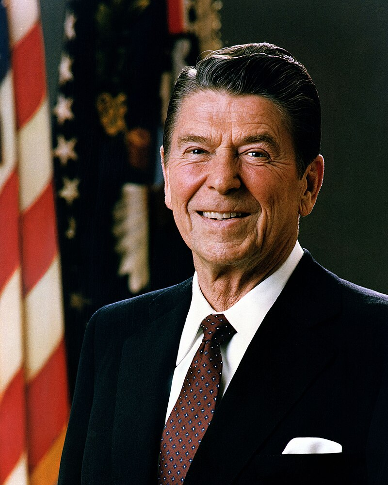

Ronald Wilson Reagan
(6-2-1911 - 5-6-2004)
40th president of USA
Ronald Wilson Reagan (February 6, 1911 – June 5, 2004) was an American politician and actor who served as the 40th president of the United States from 1981 to 1989. A member of the Republican Party, his presidency constituted the Reagan era, and he is considered one of the most prominent conservative figures in American history.
Accomplishments
- Signed on Family Law Act as governor of California that granted no-fault divorces
- Engaged in Trickle-Down Economics,a set of neoliberal reforms that involved monetarism and supply-side economics
- Armed Afghan mujahideen in their struggle against Soviet-backed Communist Government of Afghanistan
- Oversaw the fall of Soviet Union
- Loosened Federal regulation of economic activities